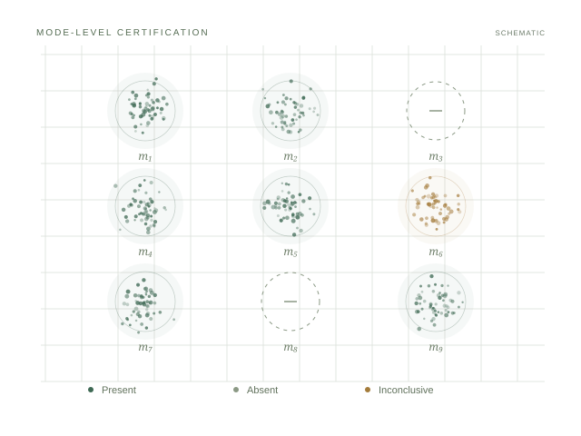

Finite samples. Three possible conclusions.Certified Mode-Recall
for Generative Models
ICLR 2027 · Under review · First author
What does a generator leave out? I developed a finite-sample framework that certifies modes as present, absent, or inconclusive, while accounting for imperfect classifier labels.
Research details
The framework provides labeller-conditional validity and consistency guarantees, with sample-complexity bounds for rare modes. I evaluated GANs, flow matching, and pretrained DDPMs on StackedMNIST, CIFAR-10, and CelebA subgroups.
The experiments examine how apparent sample quality can mask missing modes and subgroup coverage gaps.
Finite-sample boundsDiffusion & flow matching